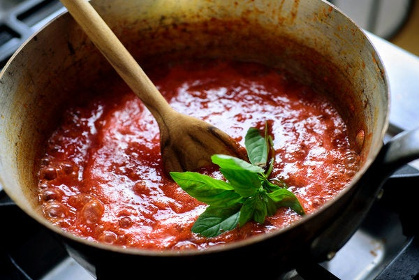

Tomato Sauce

Molto Macaluso's famous (but not actually famous) tomato sauce
This is my recipe for the tomato sauce I make for my family.
This sauce works well on pretty much any pasta, but works exceptionally well for spaghetti and meatballs.
Always use a high quality extra virgin olive oil, unseasoned canned DOP san marzano tomatoes, and fresh basil.
Ingredients
- 2 28 oz cans San Marzano Tomatoes
- Extra Virgin Olive Oil
- 3-4 Cloves Garlic chopped small
- Small Sweet or Yellow Onion diced
- Fresh Basil (to taste)
- Salt (to taste)
- Fresh Ground Pepper
- Sugar (to taste)
Cooking Instructions
- In a stainless-steel pot (get that teflon oudda here), add 1 tbs extra virgin olive oil, set heat to low/medium.
- After a few minutes, add onion and simmer until tender (we aren't looking to clarify at this stage).
- Add garlic and continue to simmer. Add more olive oil if needed.
- Add a few dashes of salt and fresh ground pepper
- Before garlic browns, pour in tomatoes. Don't worry about breaking up the tomatoes yet, the cooking process will soften and break them down.
- Cover and let sauce simmer over low heat for 3-4 hours, stirring occassionally
- At this stage, your sauce is almost ready and we can add 5-6 fresh basil leaves. Taste and add salt/sugar/pepper to your desire. If you cooked meatballs as well (and you should), add them to the sauce and simmer for another 30m - 1hr.
- Serve and Enjoy!